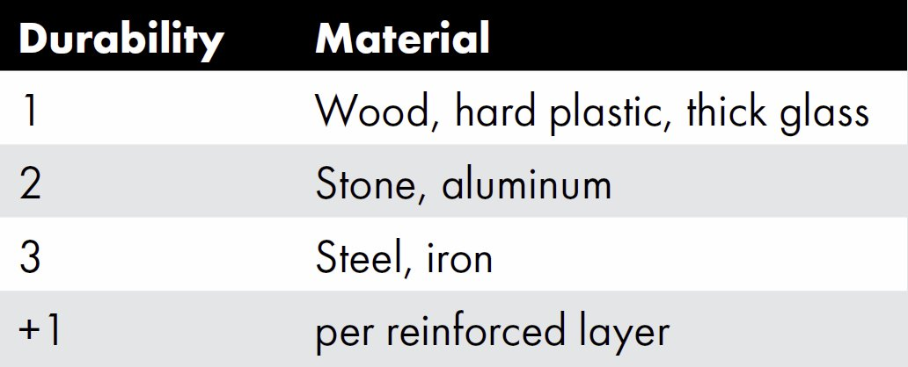

"Dude, being near you is like living in XCOM. Impossible Ironman XCOM. Every time you poke an exploit and bend the map, the universe rolls a 95% success and still whiffs − but the bullet ricochets into someone else's face. I, uh, suppose that's kind of an upside? Not for them though."
- Dice Pool — Scar Finesse (4) + Acclimation (0) + Variation Magnitude
- If the target is an unwilling character or one who doesn't know they are being targeted, the intended victim makes a Contested Composure + Supernatural Tolerance roll to avoid its effects. (If the Variation specifies that it is instead Resisted by the target, they do not generally get to Contest the roll as well.)
- Action — Simple ◆ Instant or Contested (see above)
- Roll Results —
- Success: The Variation activates, and Joshua suffers the effects of the entangled Scar.
- Exceptional Success: As a success, and Joshua may heal a minor Instability.
- Failure: The Variation fails to activate.
- Dramatic Failure: The Variation fails to activate, and Joshua suffers a minor Instability.
Effect: Joshua is supremely unlucky, subject to some cosmic curse or quirk of fate. At best, this misfortune is a nagging inconvenience for him; at worst, it puts his loved ones in danger as well and defines him by the maelstrom of catastrophes that follow in his wake.
Once per chapter, the Storyteller may cause a minor misfortune to befall Joshua. This is a notable, if temporary, setback. In addition to any narrative effect, it can subtract 36 − Scar Resistance (3) dice from a roll or grant a like number of dice to an opponent's roll.
Additionally,
- Deviation − Association: Whenever a misfortune would befall Joshua, the Storyteller may have it befall one of his Loyalty Touchstones or a member of his cohort, instead.
"Bro, you just modded the whole map in real time. Drag-and-drop walls, exit signs over the real ones and suddenly everyone's playing a totally different level. Do you ever forget which parts are real and which are yours? What if you overwrite something important?"
In some cases, activating the Variation grants all of these abilities at once; in others, each effect requires a separate activation.Deviant: the Renegadesp.110 ToggledToggledVariation KeywordIf this Variation is Persistent:
- It is only active when Joshua chooses to activate it, which requires an instant action (unless this Variation is also Reflexive).
- Once activated, it remains active until the end of the scene.
Effect: Joshua can conjure illusions.
Joshua may generate holograms of up to Size 5SizeHow large an object or character is. Objects smaller than Size 1 can fit entirely in a person's palm. Chronicles of Darknessp.26 (or with a one-meter radius). This illusion is static unless directed during the turn and disappears at once if Joshua moves out of range of it. Simple holograms do not require a roll, but especially detailed illusions may demand Skill or Scar Finesse rollsScar Finesse (4) + Acclimation (0) + Magnitude (3) = 7 Dice as the Storyteller deems appropriate.
Chronicles of Darknessp.26 (or with a one-meter radius). This illusion is static unless directed during the turn and disappears at once if Joshua moves out of range of it. Simple holograms do not require a roll, but especially detailed illusions may demand Skill or Scar Finesse rollsScar Finesse (4) + Acclimation (0) + Magnitude (3) = 7 Dice as the Storyteller deems appropriate.
Joshua generates convincing audiovisual illusions, and can give his holograms substance. Holographic objects have a DurabilityDurabilityObject TraitHow hard the object is to damage.Subtract Durability from any damage inflicted on the object.Durability has no effect against attacks that inflict aggravated damage.Once an object has taken more damage than its Durability, anyone using the object suffers a −1 die penalty.Deviant: the Renegadesp.207 of 1 and StructureStructureObject TraitAn object's Structure equals its Durability + Size.Each point of damage (after Durability is subtracted) reduces Structure by one point. Objects do not differentiate between bashing and lethal damage.When an object's Structure hits 0, it is destroyed.Deviant: the Renegadesp.207 equal to SizeSizeHow large an object or character is. Objects smaller than Size 1 can fit entirely in a person's palm.Chronicles of Darknessp.26 + Durability. Characters within the affected area can pick up these illusory objects and use them as tools or weapons, although creating complex machines and electronics will require Skill and Scar Finesse rolls, often with significant penalties. Holographic characters can take actions as though RetainersRetainerSocial MeritYou have an assistant, sycophant, servant, or follower on whom you can rely. Establish who this companion is, and how he was acquired. It may be as simple as a paycheck. He might owe you his life. However it happened, you have a hold on him.A Retainer is more reliable than a Mentor, and more loyal than an Ally. On the other hand, a Retainer is a lone person, less capable and influential than the broader Merits.The Merit's dot rating determines the relative competency of the Retainer:A one-dot Retainer is barely able to do anything of use, such as a pet that knows one useful trick, or a homeless old man that does minor errands for food.A three-dot Retainer is a professional in their field, someone capable in his line of work.A five-dot is one of the best in her class.If a Retainer needs to make a roll, and it's within her area of expertise, double the dot rating and use it as a dice pool. For anything else, use the dot rating as a dice pool.This Merit can be purchased multiple times to represent multiple Retainers.Restrictions: Renegades rarely have this Merit, and very few of them have a Retainer rated at more than three dots. with a rating of 21 + Half Scar Power (1) and no area of expertise, as long as they are directed by Joshua, acting collectively as a single Retainer even if the illusion contains several characters.
- Deviation − Aura: Joshua may generate holograms all around himself out to short range.